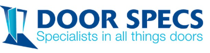

Trade and service businesses across Christchurch, Selwyn, Canterbury and New Zealand.
“Knowing the business is running properly”
My painting business is too small to hire a full-time office person and too big to not have one, for years I just scraped by doing the bare minimum. Since Monique came on board I know my business is running properly now and I have someone to pick up on the little mistakes that get made while I rush through the paperwork to get back to site. Better yet, she answers her phone when I have silly questions. Brilliant!
I would and I have, recommended Admin for Tradies to anyone that needs a little help with their bookwork.
Richard Grady, Director, The Painters — Selwyn

“Suggesting easier ways to do things”
Monique responds straight away to any question and is always on hand with suggestions of easier ways to do things, saving time and money.
Sacha and Craig, TBIR Landscaping

“Changing the way I think about AI”
Working with Monique has helped me focus on the way I think about AI. Before our sessions, I mainly used it for writing emails and as a glorified search engine.
She gave me a quick rundown of ways AI can be used to analyse business data quickly, giving a much clearer understanding of what's happening and helping identify trends and opportunities that might otherwise be missed.
Patrick, Director, Door Specs
“Reduce the admin, know your numbers, put systems in place”
I run a small building company in Christchurch specialising in architectural builds. It's me on the tools, a small crew, and a family at home, so I don't have hours for admin. Monique has done our Xero for years and has walked with us in NextMinute the whole way. Our next task is to improve the structuring of quotes through to back costing.
She keeps things simple. If something is going to cost me time she finds a way to reduce it. Honest, straightforward, and she gets how a builder works. I'd recommend Admin for Tradies to any tradie who wants to reduce their admin, know their numbers and put systems in place.
Sam Hemapo, Director, Hemopo Builders
“Keeping up with a business that moves fast”
Totoniks makes natural dog food toppers from venison blood, made in New Zealand and sold into the United States and other markets. We have grown fast and our books are complex, with multiple currencies, exporting, rebates and online channels.
Monique put the bookkeeping systems and processes in place to keep it under control, uses AI in a practical way, and gives me operations reports I can make decisions from plus a clean monthly handover for our accountant. She keeps up with a business that moves fast.
Geoff Bowers, CEO I Founder & Director, Totoniks

“Picking up little errors before they become big ones”
Monique at Admin for Tradies has made our finance admin so much easier and reliable. She's great at explaining what it is that we need to do and has amazing attention to detail, she picks up our little errors before they become big ones and makes sure everything is reconciled.
Monique chases down supplier over-billings, gives us easy to understand end of month reports and makes sure we are managing things like credit card connections to Xero.
Wouldn't go back!
Martin Lee, Director, Bright Smiles Christchurch

“Streamlining accounts processes with AI”
Monique is highly capable and particularly enjoys creating efficient, practical systems. She has significantly streamlined our accounts processes, including using AI to develop an app for checking supplier statements.
We engaged Monique when our accounts person left at short notice six years ago and she continues to manage our bookkeeping today. I have no hesitation in recommending Monique to businesses wanting reliable bookkeeping support and more efficient accounts processes.
Phill Ruby, Director, Advanced Technical Services
“Keeping things simple”
Monique has been doing our bookkeeping for over six years. She found us an accountant that suited and has taken care of all our bank rec, receipts and helps with the year-end handover to the accountant.
Our scheduling is still manual and that suits as I'm out in the field. Monique can work with technology and paper systems. Highly recommend to small local tradies.
Andrew Longbottom, Director, AJ's Driver Training

“Making our bookkeeping internally strong”
At Internal Strength, we deliver a positive mindset course focusing on building internal self-worth and inner confidence within our students. I am proud to say our Internal Strength bookkeeping is now internally strong and professional thanks to Monique.
Paul Whatuira, Director, Internal Strength
“Developing systems to make Xero easy”
I took on a treasurer's role knowing nothing of Xero, the accounting system being used and struggled monumentally trying to get it to do what I wanted it to do — provide accurate records and calculations. I was recommended Admin for Tradies (Monique) by our accountants. She educated me and developed systems to make it easy for me to grasp and maintain.
Her knowledge and ability to systemise professionally have meant a great deal to me, reducing the frustration and the time I have spent on undertaking the duties of the Treasurer. I wouldn't hesitate to recommend her prompt and professional services.
John Rae, Treasurer

“Sharing wisdom with a refreshing honesty”
Monique is incredibly thorough and makes great use of technology to ensure she has clearly communicated with you as the client.
I used her services to reflect on a project that required me to go outside my normal skills and she was not only able to help me, but connect me with wider resources too. She is very generous with her wisdom and brings a refreshing honesty to her work. I was recommended to work with Monique and am very happy to pay it forward with the same recommendation.
Kathryn, Director, Career Balance
Read all 13 reviews on Selwyn Connect.
Try this. Ask your own AI about me. Download the briefing pack and ChatGPT, Claude, Copilot or Gemini can talk you through what I do, what it costs and whether I am a fit for your business.
Download the AI briefing packOne phone call and you'll know whether we can help. No pitch, no obligation.
Book a free chat